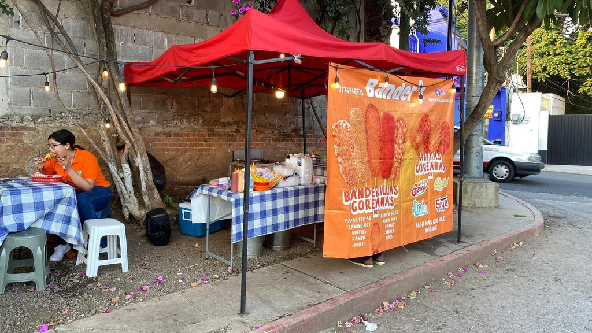

Founders
Luis Eduardo
( I don’t have some information yet) with his creativity he created the concept and logo and all the idea of banders give to banders the special touch that mark a difference.
Kim Josell
Kim Josell born in March 2001 Kim is the son of Helga, he is studying in BYU-Pathway worldwide as a full stack developer, since August 2020, with his organizational skills he give to banders the structure as a founders with standardization and systematization of the systems in banders.
Jose Emanuel
Jose Emanuel born in August 2002, Jose is the son of Helga, he is a missionary of the church of Jesus Christ of the latter-day saints, with his selling talents and his especial treatment with people he give the connections and made the enough efforts to make grow banders.
The first Local of banders
In May of 2023 Banders Begins in Cuernavaca Morelos Mexico, in a tiny space in the street calzada de los reyes, with no more than a frier and the ingredients to make each corn dog special, for the customers. With time and patience, the name of banders began to spread in the whole town, lately unfortunately they needed to close in this place, but Luis Jose and Kim didn’t give up, and they started to make plans to open in another place and continue with banders.
